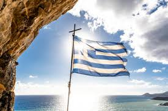

Greece, Land of the Light

Greece is a country in Southern Eastern Europe. It civilizations date back to almost 3000 BC. Ancient Greek civilization flourished from the period following Mycenaean civilization, which ended about 1200 BCE. The ancient and modern name of the country is Hellas or Hellada. Hellas means: the land of light. Hel (in ancient greek: Ελ) means light, and las (in ancient greek: λας) means land.